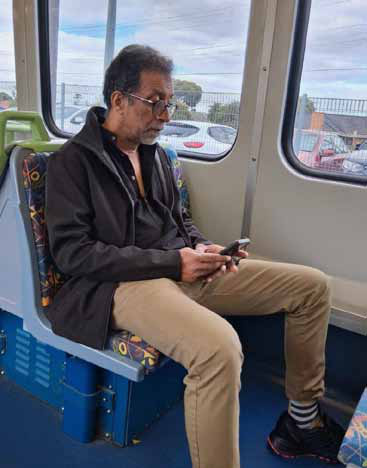
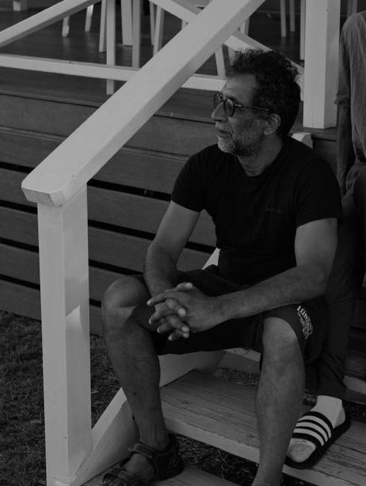
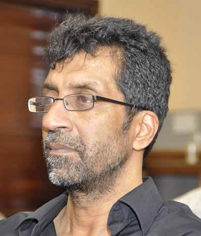
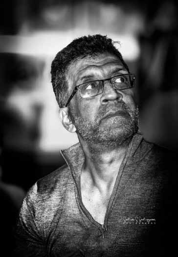

"Sinhala and Tamil Nationalism Are Two Sides of the Same Coin—Both Rooted in the Flawed Logic of Territorial Ownership and Ethnic Exclusivity”
"Sinhala and Tamil Nationalism Are Two Sides of the Same Coin—Both Rooted in the Flawed Logic of Territorial Ownership and Ethnic Exclusivity”
Jaffna Monitor hellojaffnamonitor@gmail.com 54 INTERVIEW "Sinhala and Tamil Nationalism Are Two Sides of the Same Coin—Both Rooted in the Flawed Logic of Territorial Ownership and Ethnic Exclusivity” BY: Our Special Correspondent - LTTE Co-founder Ragavan Part 05 How do you perceive the protests against Tissa Raja Maha Vihara in Thaiyiddy, Jaffna, with some Tamil nationalist politicians calling for its demolition? Similarly, how do you view Sinhala settlements in traditionally Tamil-majority areas— are they a state-backed demographic shift or natural migration? Do these settlements threaten Tamil identity and political rights, or is this concern exaggerated? Ragavan

Jaffna Monitor hellojaffnamonitor@gmail.com 55 I believe there needs to be a paradigm shift in how land disputes and ethnic discourse are framed, particularly concerning land grabbing. Historical events do not follow a linear trajectory but rather form a complex web of regressions, progressions, and socio-political changes. Both Sinhala and Tamil nationalist historiographies have portrayed settlement processes through the lens of traditional homelands, often overlooking broader socio- economic factors. In principle, people have the right to move and settle anywhere in Sri Lanka. Migration, both within and beyond territorial boundaries, has been a historical constant. For example, in the 1890s, many Tamils from the Jaffna Peninsula migrated to Trincomalee for employment at the colonial military base. Similarly, the colonial government brought Tamils from India to work in the plantation sector, where they were severely exploited. Muslims and Sinhalese also migrated across the island in pursuit of economic opportunities. Tamils from the North, particularly from Delft and other small islands, settled in the Wanni before the war, which led to tensions with local communities. A local group called 'aho; mfw;W rq;fk;" ( Yaal Agatru Sangam-Jaffna Eviction Association) emerged in response, opposing the settlement of Jaffna Tamils. Likewise, Malayaga Tamils who were displaced by anti-Tamil riots settled in the Wanni but were often marginalized. A former LTTE member admitted that when the LTTE instructed Tamils from Jaffna to relocate to the Vanni in 1996—amid the military's advance—thousands were displaced. At that time, Mayilāyāka Tamils, who had resettled in the Vanni after the 1977 anti-Tamil riots, owned fertile roadside lands—properties that would be worth crores of rupees today. The newly displaced Jaffna Tamils, many of whom had money but no land in Vanni, allegedly lured the Mayilāyāka Tamils into relocating further inland by offering them Rs. 5,000 as a ‘gift.’ Officially, such land—granted under a permit—cannot be sold; it is only transferred as a gift. Though the LTTE did not directly orchestrate these transactions, they were the de facto governing authority in the area. As such, they had the power— and the responsibility—to prevent this quiet dispossession. But they didn’t. In my view, this was an appropriation of land through deception, carried out in the shadow of war and sanctioned by silence. The real issue, however, lies in state-sponsored Sinhala settlements. While forcible settlement schemes and military occupations must be confronted, agrarian development programs should be analyzed separately. Poor, landless peasants from the South were promised land and economic stability, leading to voluntary settlements. Until the late 1970s, Tamil and Muslim communities were not forcibly displaced through these programs and were, in some cases, allocated land for cultivation. However, there were allegations that Sinhala settlers were given priority in land distribution. Projects like the Gal Oya scheme led to demographic shifts and occasional tensions, yet nationalist historiographies tend to ignore the broader socio-economic context in favor of ethnic narratives. Sinhala settlement in the dry zone can be broadly categorized into three phases. The first phase, from the 1930s to 1980, was driven by food shortages and the colonial government's efforts to encourage agricultural production. More than 80% of Sri Lankan land was state- owned (formerly crown land during British rule). D.S. Senanayake pursued two key objectives: achieving self-sufficiency in food
Jaffna Monitor hellojaffnamonitor@gmail.com 56 production and glorifying ancient Sinhala agrarian development. The Gal Oya project, completed in 1953 under the leadership of a Jaffna Tamil, Kanagasundaram, served multiple purposes, including hydroelectric power generation, agrarian expansion, and sugar production. While Sinhala landless peasants were settled in the East, this phase did not involve the systematic displacement of Tamils and Muslims. In fact, Tamils and Muslims from the Eastern Province were encouraged to participate in the settlement. However, most of them were reluctant to move into the schemes, as they already had access to fertile lands in the East. The second phase, from the 1980s to 2009, was characterized by militarization and Sinhala- Buddhist nationalism, leading to land grabbing and forced evictions. The state aggressively promoted Sinhala settlements while displacing Tamil and Muslim communities, often under the pretext of agrarian development, but in reality, to create buffer zones against Tamil militancy. Tamil villagers were forcibly expelled, and some were killed by security forces. The Weli Oya project is a prime example of this militarized settlement strategy. The University Teachers for Human Rights (Jaffna) (UTHR-J) documented widespread human rights violations, but Tamil nationalists largely overlooked their findings, undermining their critical work. During the Weli Oya project, Tamil villages were depopulated, and their lands were handed over to Sinhala settlers, who were simultaneously recruited as Home Guards to fight against Tamil militants. Scholars such as Thiruni Kelagama and Korf described this as "the lure of the land." These settlers were ultimately betrayed by the state, facing severe water shortages and becoming targets for LTTE attacks. Meanwhile, military expansion under the guise of national security resulted in the establishment of High-Security Zones (HSZs), where lands belonging to Tamils and Muslims were seized. The third phase, after 2009, saw the continuation of Sinhala-Buddhist ideological expansionism, military land appropriation, and commercial ventures. Following the end of the war, the military retained vast tracts of land under the pretext of national security, but many of these lands were used for tourism, agribusiness, and private enterprises, particularly under the Rajapaksa regime. The Yahapalana government (2015–2019) claimed to have returned 80–85% of military- occupied lands, but in practice, many rightful owners were denied access. Under Gotabaya Rajapaksa, land acquisitions intensified, with sacred Buddhist sites being established on seized Tamil-owned lands under the guise of archaeological conservation. It is important to recognize that land grabbing has not affected only Tamils. In Trincomalee and Ampara, the state has also appropriated

Jaffna Monitor
hellojaffnamonitor@gmail.com
57
lands belonging to Muslims. In
Ambara, the lands of Sinhala
villagers were also appropriated.
However, Tamil nationalist
discourse does not acknowledge
this, as it considers the North
and East to be exclusively Tamil
territories.
Under the NPP government,
there's little evidence of new
land grabs. The Thaiyiddy
issue, however, warrants
critical examination. Unlike
past land protests in the East
and Wanni, this case gained
national attention—largely due
to Jaffna-centric mobilization
by right-wing Tamil nationalists
exploiting ethnic and religious
tensions. A Vihara existed in
Thaiyiddy since 1948 but was
abandoned after the 1958 riots,
rebuilt, and then destroyed by
Tamil militants in 1978. The area
later became part of a High-
Security Zone (HSZ). While
HSZs may have been justifiable
during the war, retaining land
after the conflict isn’t. Instead of
restoring the Vihara at its original
site, the Gotabaya regime enabled
the building of a new temple on
privately owned Tamil land—an
undeniable violation.
The rightful owners of the land
have every reason to protest.
However, the involvement of
right-wing Tamil nationalists
and certain Hindu religious
leaders—who appear to be using
the issue for political gain—is
troubling. Initially, the owners
reportedly pursued a negotiated
settlement, requesting alternative land nearby. A letter to
this effect was submitted to Governor Vethanayagam. But
Tamil nationalists, both local and overseas, opposed the
compromise and pressured the owners to instead demand
the destruction of the Vihara. Interestingly, there’s an
unconfirmed story that a Tamil Buddhist Sangam abroad
contributed financially to the Vihara’s construction,
unaware that it stood on privately owned Tamil land.
Narrowing the land dispute to religious sentiment risks
deepening divisions. Instead of framing land rights
through the lens of Tamil nationalism or religious
exclusivity, broader issues—such as militarization,
economic justice, and political rights—must be brought
to the forefront.
The government has both a political and moral
responsibility to ensure a fair resolution. It should allocate
land outside the Vihara premises while compensating

Jaffna Monitor hellojaffnamonitor@gmail.com 58 rightful owners. Progressive activists and intellectuals must continue pressuring the government to uphold its electoral promises, particularly regarding the release of all military-occupied lands. Additionally, the state must recognize the importance of land access for livelihood, particularly in regions like the Wanni, where communities depend on state lands for survival. Military claims over such lands are unjustifiable. The NPP’s Clean Sri Lanka project aims to achieve social and environmental progress within a defined timeframe. A similar task force should be established to address land grabbing and military expansionism. Sri Lanka must move beyond ethnicized narratives to adopt an inclusive approach that ensures land rights for all communities, fostering long-term peace and coexistence. What mistakes are the current Tamil leaders and Tamil political parties making? As an early militant, how do you view this trend? That is an important question. It is true that post-colonial Sri Lanka was shaped as a majoritarian, ethno-nationalist state. However, countering this with an equally rigid Tamil nationalist ideology is counterproductive. Tamil nationalism cannot serve as a counterweight to Sinhala-Buddhist nationalism—doing so only entrenches a cycle of exclusivist identity politics. Sinhala supremacists have long clung to the Mahavamsa narrative, which falsely portrays Sri Lanka as an exclusively Sinhala-Buddhist land—divinely ordained for them. In reaction, Tamil nationalists have crafted a mirror image: a counter-narrative that claims the North and East as an exclusive Tamil homeland, historically ruled and inhabited solely by Tamils. Though seemingly at odds, both ideologies are built on the same foundation— territorial entitlement, cultural exceptionalism, and exclusion. At their core, both stem from ethno-nationalist thinking—and both are historically flawed. When the Federal Party was formed in 1949, its advocacy for federalism was broader than today's ethnic Tamil nationalism. The Party’s concept of “Tamil-speaking people” included Muslims and Malayaga Tamils. However, when it claimed the North and East as the traditional homeland of Tamil- speaking people, it came to be seen as a Tamil homeland. This was problematic, as most Muslims lived outside these provinces and had distinct political concerns, while the disenfranchised Malayaga Tamils lived primarily in the south. I once spoke to Thilagar, a Malayaga Tamil politician, who told me: “You were asking for separation, while we, after being made stateless, fought for citizenship and inclusion.” The Federal Party’s vision of Tamil-speaking unity collapsed after the Vaddukoddai Resolution of 1976, which called for a separate state. Although the Resolution retained the term “Tamil-speaking people,” it framed Tamil Eelam around the historical Tamil kingdoms, embedding ethnic nationalism into its core political demand. Once territorial claims are tied to an ethnic identity, exclusion becomes inevitable. Merely residing in a particular region does not justify territorial sovereignty. History is a story of migration, intermixing, and evolving identities. Traditions are often retroactively constructed to serve political narratives. There is no scientific or historical basis for exclusive
Jaffna Monitor hellojaffnamonitor@gmail.com 59 Tamil ancestral rights over the North and East. Nationalism itself is a modern construct, that emerged in the 18th century. Before that, ethnic identities were fluid and not central to political power. In ancient Sri Lanka, Tamil warriors served in Sinhala armies, and vice versa. Ethnic divisions were not sharply defined in the social or political order. According to historian Nira Wickramasinghe, the 1871 census listed 78 “nationalities” and 24 “races.” By 1911, the census had begun categorizing populations more rigidly— distinguishing among groups such as Kandyan and Low Country Sinhalese, Ceylon and Indian Tamils, Muslims, Malays, Veddas, and Burghers—labeling them as distinct “races.” She found that the census served as the basis for determining race-based representation in the colonial state, and political representation was initially distributed equally among selected racial groups. Race came to signify not just physical traits but also assumed mental and behavioral characteristics—shaped by emerging racial theories in early 20th-century Europe. In Sri Lanka, 'ethnicity' was officially introduced only in the 1971 census, marking not a real shift, but a continuation of colonial thinking. 'Race' was simply replaced by 'ethnicity'—a change in terminology, not in ideology. This reflects how colonial powers constructed identities, which were later adopted and reinforced by local political elites during post- colonial nation-building. Recent genetic studies also reveal striking similarities between Sinhalese and Sri Lankan Tamils. Linguistically, Sinhala has absorbed extensively from Tamil and Sanskrit. Culturally and religiously, too, there are overlaps—Sinhalese worship Hindu deities like Ganesha, Vishnu, Kali, and Murugan, and Sri Lankan Buddhism integrates Hindu practices. Claims of ethnic or cultural purity are thus largely arbitrary. As Palestinian-American academic and literary critic Edward Said aptly observed: “No one can deny the persisting continuities of long traditions… but there seems no reason except fear and prejudice to keep insisting on their separation and distinctiveness as if that was all human life was about.” Tamil politics must now liberate itself from rigid ethno-nationalist thinking. Nationalism manufactures a false unity through imagined identities. Whether Sinhala or Tamil, ethnic nationalism is an aberration—undemocratic and inhumane. Coexistence must instead be rooted in fraternity, equality, and social justice. Ordinary people do not inherently follow nationalist ideologies. Their priorities are

Jaffna Monitor hellojaffnamonitor@gmail.com 60 livelihoods, stability, and safety. Nationalism gains traction only when it appears to secure those needs—often through fear and misinformation. Today, Tamil nationalist politics is in decline, especially with the rise of the National People’s Power (NPP). As I said earlier, during the Aragalaya, a new political consciousness emerged, particularly among youth. Many began to see ethnic politics as a tool long exploited by elites for power. The NPP capitalized on this by promoting unity and justice across communities. However, dismantling entrenched ethnic narratives will take time. The challenge ahead is to turn this political awakening into real reform. This shift has unsettled Sinhala supremacists, as it threatens their ideological dominance. Simultaneously, Tamil nationalist parties— having lost recent elections in the North and East—see this transformation as a threat to their survival. They are now uniting out of fear of political irrelevance. The NPP, while committed to a non-racist, united Sri Lanka, must act on its promises. The civil and military institutions of the state were built on ethnocratic foundations. Reforming them is essential. Without meaningful structural change, there’s a real risk that ethnic politics will once again rise to fill the void. In your view, how has the National People's Power (NPP) government performed in the months since coming to power, particularly in relation to the Tamil people who extended their support at the polls? Do you believe the NPP is adequately addressing the long-standing grievances of the Tamil community — or do you feel that, once again, the Tamil vote is being taken for granted? I believe we need to assess the NPP’s performance not through an exclusively ethnic lens, but by critically evaluating its commitment to dismantling Sri Lanka’s entrenched ethnocratic state structure. While acknowledging the ethnocratic nature of the state, I would argue that invoking Tamil ethnic nationalism as a response is counterproductive. My concern is that certain right-wing Tamil nationalist forces are now regrouping to discredit the NPP entirely. Rather than offering constructive criticism, they brand all southern political formations as “Sinhala parties” and urge Tamils to vote exclusively for “Tamil” parties. From an inclusivist political perspective, I choose to engage critically—but not dismissively—with the NPP. The party came to power with promises of ethnic reconciliation, abolition of the executive presidency, repeal of the Prevention of Terrorism Act (PTA), and an economy rooted in social justice. It garnered support from Sinhalese, Sri Lankan and Malayaga Tamils, and Muslims who were eager to dismantle the entrenched political status quo. Although often labeled a leftist force, the NPP is more accurately described as a social democratic party. Yes, it has fallen short on several key promises—but criticism must be tempered with historical and political awareness. The JVP, the dominant political party within the NPP, has a complicated past. It once aligned with Sinhala-Buddhist nationalist forces, opposed the 13th Amendment, rejected the North-East merger, and resisted the
Jaffna Monitor hellojaffnamonitor@gmail.com 61 Norwegian-led peace process. It uncritically supported the military during the war. Despite its Marxist origins, the JVP's practice often fused socialism with Sinhala nationalism. Ironically, the LTTE also opposed the 13th Amendment and the peace process, albeit for different reasons. They aligned secretly with President Premadasa to fight the IPKF and later supported Mahinda Rajapaksa’s 2005 presidential bid. However, the JVP’s political vision began to evolve after the ouster of ultra-nationalist figures like Wimal Weerawansa and the formation of the NPP in 2019. The 2022 Aragalaya movement was a turning point—it mainstreamed discourses on ethnic unity and social justice. The NPP embraced this moment, promoting a more inclusive political ethos. While remnants of Sinhala nationalism remain, branding the NPP a Sinhala supremacist party is both inaccurate and intellectually lazy. President Anura Kumara Dissanayake pledged to complete the 2015 constitutional reform process by introducing a new constitution that promotes democracy and equality, devolves power, and reforms the parliamentary electoral system. The NPP’s public commitments to recognising Sri Lanka’s multiethnic and multireligious character, and to safeguarding linguistic, cultural, and religious freedoms, are steps in the right direction. But rhetoric must translate into action. Repealing the PTA was a central campaign promise. With a two-thirds majority, it should be achievable. Prime Minister Harini Amarasuriya has acknowledged that the PTA should be abolished. President Anura also stated clearly in a recent interview that repeal is forthcoming. Yet, after the NPP came to power, individuals continued to be arrested under the PTA. In March 2025, Mohamed Rusdi was detained under the Act for allegedly pasting a sticker critical of Israel. Authorities justified it by claiming he held extremist views. In a global climate of protest against Israel’s actions in Palestine, detaining Rusdi for an anti-Israel sticker resembles an Orwellian “thought crime.” He was later released on bail, but the incident casts doubt on the NPP’s reformist credibility. Of course, the NPP inherited a repressive and corrupt state apparatus. Dismantling it will not happen overnight. However, symbolic and substantive gestures—like repealing the PTA or announcing a phased demilitarisation of the North and East—can foster trust among Tamils and other minorities. The global context cannot be ignored. We are witnessing the ascent of hard-right ideologies: Trumpism in the U.S., neo-Nazi movements in Europe, Hindutva in India, Zionist violence in Gaza, and Putin’s ethno-nationalism in Russia. In this climate, Sri Lanka’s departure from racist authoritarianism—reflected in the

Jaffna Monitor hellojaffnamonitor@gmail.com 62 electoral defeat of the Rajapaksas and Ranil Wickremesinghe—is meaningful. Chile offers a useful comparison. After decades of neoliberalism, its 2019 student-led uprisings led to the formation of the broad progressive alliance Apruebo Dignidad and the election of Gabriel Boric. Though their proposed constitution was rejected, the movement disrupted hegemonic narratives. Similarly, Aragalaya challenged Sri Lanka’s corrupt elites, neoliberalism, and ethnocracy—marking a paradigm shift. Yet, Sinhala-Buddhist nationalism remains largely unchallenged. If the NPP truly wishes to fulfil Aragalaya’s vision, it must form a broader progressive alliance to tackle both neoliberalism and the ethnocratic state structure. Back in 2009, after the LTTE's defeat, some predicted a democratic opening. I was skeptical—foreseeing instead the deepening of a militarized and politicized state. Under the Rajapaksas, that pattern only intensified. Today, NPP leaders have acknowledged past state violence, enforced disappearances, and ethnic discrimination. That acknowledgment is important—but it must lead to concrete, accountable action. President Anura and Prime Minister Harini have won the trust of people across communities. They are charismatic and appear genuinely committed to public expectations. Particularly in the North and East, Tamils have shown a willingness to listen—attending meetings and engaging with the leadership. This is a valuable opportunity to turn promises into policy. Demilitarisation of the North and East is essential. It won’t happen overnight—but the NPP must articulate a clear, time-bound roadmap. In sum, the NPP deserves critical but conditional support from all democratic forces. As Chilean President Boric said, countering extremism requires “ideology, conviction, less rhetoric, and more concrete actions that improve people’s quality of life.” Let us hold the NPP accountable—not to weaken it, but to push it toward fulfilling the hope it inspired. What do you think is the way forward? Do you think that the Tamils have the right to self-determination? If not what is the solution? Let me address the issue of self-determination. As I mentioned earlier, self-determination, when linked to national liberation struggles against colonialism, had an inclusive character despite its limitations. However, during the post-colonial nation-building process, the rights of minorities were ignored, leading them to assert their right to self-determination and, in some cases, secession. In Sri Lanka’s political and practical context, if Tamils assert their right to self-determination as a distinct nation, a critical question arises: what about minorities within that proposed Tamil nation—such as Muslims, Sinhalese, and Veddas in Tamil-majority areas? Likewise, in the South, do Tamils, Malays, Bohras, Burghers, Muslims, and Hill Country Tamils have the same rights? Where does this path of fragmented self-determination lead, and who has the authority to define nationhood? Should population size disqualify smaller groups like the Malays from being recognized as distinct nationalities? There are about 600 linguistic communities and 5,000 ethnic groups in the world. If every community claimed the right to self- determination and secession, there would
Jaffna Monitor
hellojaffnamonitor@gmail.com
63
be 5,000 exclusive states. Is it possible and
practical to establish separate states for each
ethnic group?
For instance, when drawing the border for
a new nation, what happens to those living
on the border between the old state and the
newly formed one? Will they be included or
excluded? Will they be granted political rights?
Do they have the choice to be part of the new
state or remain in the old one?
Daniele Archibugi, an Italian political
theorist, argues that the principle of self-
determination is evolving into a new form
of tribalism, reinforcing some of the most
reactionary tendencies in contemporary
society. Sri Lanka’s decades of war, destruction,
militarization, and ethnic divisions have
provided painful lessons on the dangers of this
approach.
In the Sri Lankan context, approximately
30% of Sri Lankan Tamils live in the South.
Although a significant portion of Muslims
reside in the East, more than 70% of them
live in the South. Similarly, Malayaga Tamils
are not confined to the Malayagam but also
live in Colombo and other cities. Sri Lanka
is a multicultural, multi-religious society,
and territorial divisions based on ethnicity
are neither practical nor sustainable. Such
divisions are not only unrealistic but also
dangerous, as they risk leading to further
fragmentation and regression.
In the global context, the Palestinian struggle
is widely recognized as a fight against settler
colonialism and imperialism, and thus
carries a progressive dimension. However,
prominent activists and intellectuals—such
as the late Edward Said—did not support
the two-nation solution, despite Israel being
classified as an apartheid settler-colonial state.
Said noted the absence of a shared concept of
citizenship among both Jewish and Palestinian
communities. He argued that any solution
should not be based primarily on ethnic or
racial identities, but rather on the principles
of equal rights, social justice, and peaceful
coexistence as citizens of a unified Palestine.
Sri Lanka is neither an apartheid state nor a
settler-colonial state. There has been a long
history of coexistence, albeit with disputes.
Although the modern nation-state building
promoted an ethnocratic state, there is room
for coexistence and peace. In the recent
elections, people overwhelmingly voted for the
NPP without regard to ethnicity or religion.
This creates a relatively more favorable
environment for building a truly democratic
society—one in which leftist, democratic,
and progressive forces from all communities
can work together toward that goal. The
abolition of the Executive Presidency and
the establishment of meaningful power-
sharing mechanisms are essential steps in that
direction. However, power-sharing should not
be based on ethnicity or religion, as doing so
risks reinforcing ethno-nationalist politics and
deepening existing divisions.
To conclude, I quote Marx: "The tradition
of all dead generations weighs like an Alp
[mountain] on the brains of the living." As
Marx said, if you need to learn a new language,
instead of translating it back to your mother
tongue, embrace the spirit of the new language
without constantly recalling the old.
Note:
A full-length book version of this interview—
featuring many additional questions and
never-before-published insights from LTTE
co-founder Ragavan—will be released soon
by Jaffna Monitor Publications.
To pre-order your copy, email hellojaffna- monitor@gmail.com or send a WhatsApp message to +94 71 541 8220.